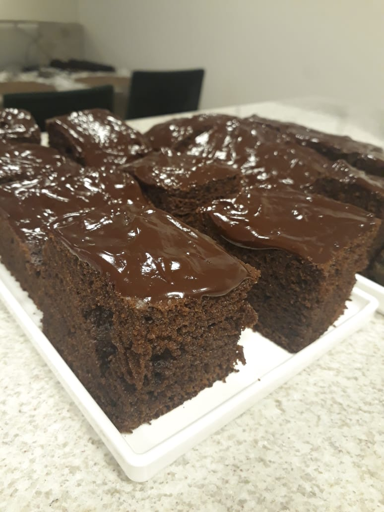

Bolo de chocolate com cobertura

Ingredientes
- 2 xícaras (chá) de farinha de trigo
- 1 xícara e meia (chá) de açúcar
- 1 xícara (chá) de chocolate em pó
- meia colher (chá) de bicarbonato de sódio
- 1 xícara (chá) de óleo
- 3 ovos
- 2 xícaras (chá) de água fervente
Modo de preparo
- Em um recipiente dissolva o açúcar e o cacau na água fervente.
- Adicione os ovos e o óleo.
- Jute a farinha peneirada e o fermento misturando bem.
- Despeje a massa em uma forma média untada e enfarinhada.
- Asse em forno Pré-aquecido á 180° por aproximadamente 40 minutos.